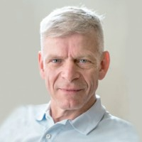
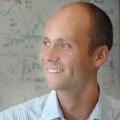

Robustness and Resilience in Stochastic Optimization and Statistical Learning: Mathematical Foundations
19-25 May, 2022
Ettore Majorana Foundation and Centre for Scientific Culture, Erice, Italy
Organizers

Laurent El Ghaoui
VinUniversityAlejandro Jofré
University of ChileFrancesca Maggioni
University of Bergamo

Johannes O. Royset
Naval Postgraduate SchoolWorkshop Schedule
For each day, audio recording of the wokshop sessione are available to download. Each talk is also available in pdf format.
You can also read the conference programme.
Friday May 20
Recorded sessions, morning
📥 DownloadRecorded sessions, afternoon
📥 Download| Time | Speaker | Talk |
|---|---|---|
| 9:40 - 10:20 | S. Wright | Primal-dual coordinate methods for robust machine learning and generalized linear programming |
| 10:20 - 10:40 | Break | |
| 10:40 - 11:20 | M. Gürbüzbalaban | Robust and Risk-Averse Accelerated Gradient Methods for Stochastic Optimization |
| 11:30 - 12:10 | M. Díaz | Clustering a mixture of Gaussians with unknown covariance |
| 12:20 - 13:00 | R. Khanna | Theory of feature selection |
| 13:00 - 15:00 | Lunch | |
| 15:00 - 15:40 | V. Leclère | Exact discretization methods for linear stochastic programming |
| 15:50 - 16:30 | L. Rosasco | A regularization tour of optimization |
| 16:30 - 16:50 | Break | |
| 16:50 - 17:30 | J. O. Royset | Rockafellian Relaxation in Optimization under Uncertainty: Asymptotically Exact Formulations |
| 17:40 - 18:20 | M. Ferris | Risk-averse multi-stage stochastic equilibria: models and algorithms |
Saturday May 21
Recorded sessions, morning
📥 DownloadRecorded sessions, afternoon
📥 Download| Time | Speaker | Talk |
|---|---|---|
| 8:50 - 9:30 | A. Pananjady Martin | Sharply predicting the behavior of iterative algorithms in random optimization problems |
| 9:40 - 10:20 | C. Paquette | Optimization Algorithms in the Large: Exact Dynamics, Average-case Analysis, and Stepsize Criticality |
| 10:20 - 10:40 | Break | |
| 10:40 - 11:20 | A. Ruszczyński | Advances in Risk-Averse Learning |
| 11:30 - 12:10 | W. Azizian | Regularization for Wasserstein distributionally robust optimization |
| 12:20 - 13:00 | B. Sen | Multivariate Quantiles and Ranks using Optimal Transport |
| 13:00 - 15:00 | Lunch | |
| 15:00 - 15:40 | J. Luedtke | Data-Driven Multi-Stage Stochastic Optimization on Time Series |
| 15:50 - 16:30 | R. Bassett | One-Step Estimation with Scaled Proximal Methods |
| 16:30 - 16:50 | Break | |
| 16:50 - 17:30 | F. Dabbene | A probabilistic scaling approach to chance-constraints |
| 17:40 - 18:20 | M. Gabl | Two-stage Stochastic Standard Quadratic Optimization |
Sunday May 22
Recorded sessions, morning
📥 Download| Time | Speaker | Talk |
|---|---|---|
| 8:50 - 9:30 | T. Homem-de-Mello | Application-Driven Learning via Joint Estimation and Optimization |
| 9:40 - 10:20 | T. Pennanen | Duality in convex stochastic optimization |
| 10:20 - 10:40 | Break | |
| 10:40 - 11:20 | G. Pflug | Guaranteed bounds for pathwise stochastic dynamic programming |
| 11:30 - 12:10 | F. Atenas | Bundle approaches for the Progressive Hedging Algorithm |
| 12:10 - 14:15 | Lunch | |
| 14:30 - 19:30 | Excursion to Segesta |
Monday May 23
Recorded sessions, morning
📥 DownloadRecorded sessions, afternoon
📥 Download| Time | Speaker | Talk |
|---|---|---|
| 8:50 - 9:30 | M. de Lara | Resilience, Viability and Stochastic Optimization |
| 9:40 - 10:20 | A. Pichler | Uniform Function Estimators in Reproducing Kernel Hilbert Spaces |
| 10:20 - 10:40 | Break | |
| 10:40 - 11:20 | S. Sen | Generalizations of Compromise Decisions (or Bagging) for Stochastic Integer Programming and Multi-stage Stochastic Linear Programming |
| 11:30 - 12:10 | D. Dentcheva | Stability and Sample-based Approximations of Composite Stochastic Optimization Problems |
| 12:20 - 13:00 | Z. Zhang | Optimal Methods for Risk-Averse Distributed Optimization |
| 13:00 - 15:00 | Lunch | |
| 15:00 - 15:40 | E. Zhou | Bayesian approaches to Distributionally Robust Optimization |
| 15:50 - 16:30 | S. Garatti | The scenario approach as a general tool for risk control in data-driven optimization |
| 16:30 - 16:50 | Break | |
| 16:50 - 17:30 | J. Li | Frank-Wolfe Methods in Probability Space |
| 17:40 - 18:20 | J. Deride | A CDF estimation problem under stochastic ambiguity |
Tuesday May 24
Recorded sessions, morning
📥 DownloadRecorded sessions, afternoon
📥 Download| Time | Speaker | Talk |
|---|---|---|
| 8:50 - 9:30 | A. Jofré | Strategic Pricing in network economies: learning and algorithms |
| 9:40 - 10:20 | M. Soltanolkotabi | Overparameterized Learning Beyond the Lazy Regime |
| 10:20 - 10:40 | Break | |
| 10:40 - 11:20 | P. Thompson | Robust linear regression with heavy-tails and contamination: the high-dimensional regime |
| 11:30 - 12:10 | M. Hintermüller | Optimization with Learning-Informed Differential Equation Constraints |
| 12:20 - 13:00 | K. Balasubramanian | Two Recent Results on Stochastic Multi-level Composition Optimization |
| 13:00 - 15:00 | Lunch | |
| 15:00 - 15:40 | B. Grimmer | Convergence of first-order methods for (some) nonconvex-nonconcave minimax optimization |
Sponsors
European Mathematical Society
European Working Group on Stochastic Optimization
Committee on Stochastic Programming
Istituto Nazionale di Alta Matematica Francesco Severi, Gruppo Nazionale per il Calcolo Scientifico
Center for Mathematical Modeling, University of Chile